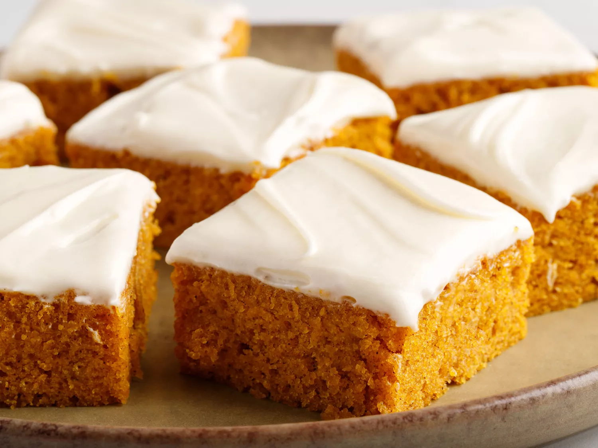

Pumpkin Bars

Pumpkin bars are full of flavour with decadent cream cheese frosting. You'll love them!
Ingredients:
- 1 can of pumpkin puree
- 1 2/3 cups white sugar
- 1 cup vegetable oil
- 4 large eggs
- 2 cups of flour
- 2 tsp cinnamon
- 2 tsp baking powder
- 1 tsp baking soda
- 1 tsp salt
Frosting
- 1/2 cup butter, softened
- 1 package of cream cheese, softened
- 1 tsp vanilla extract
- 2 cups sifted icing sugar
Directions:
- Preheat the oven to 350 degrees F (175 degrees C).
- Make cake: Beat pumpkin, sugar, oil, and eggs with an electric mixer in a medium bowl until well combined.
- Sift together flour, cinnamon, baking powder, baking soda, and salt in a separate bowl; stir into pumpkin mixture until thoroughly combined. Spread batter evenly into an ungreased 10x15-inch jelly roll pan.
- Bake in the preheated oven until cake bounces back when gently pressed, 25 to 30 minutes. Remove from the oven and let cool.
- While the cake is cooling, make frosting: Beat together butter and cream cheese until smooth; stir in vanilla. Add confectioners' sugar a little at a time, beating until mixture is smooth.
- Spread frosting evenly on top of cooled cake. Cut into 24 squares.